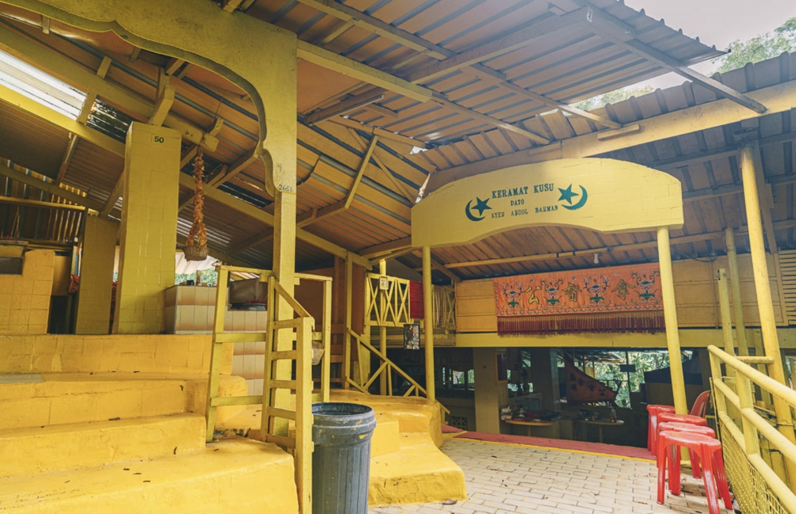
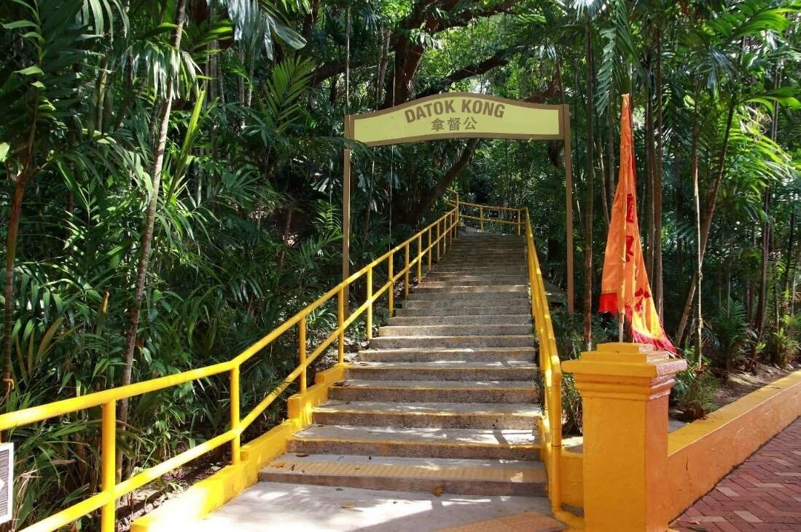
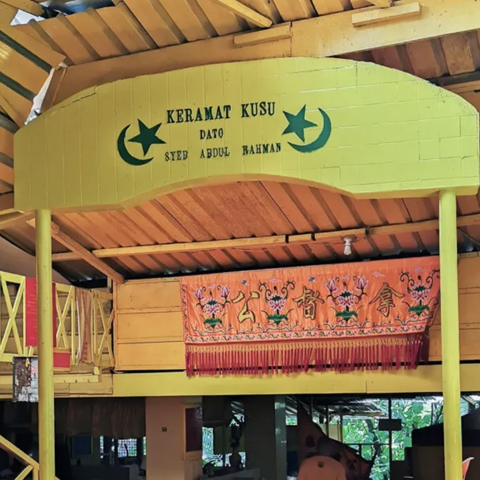
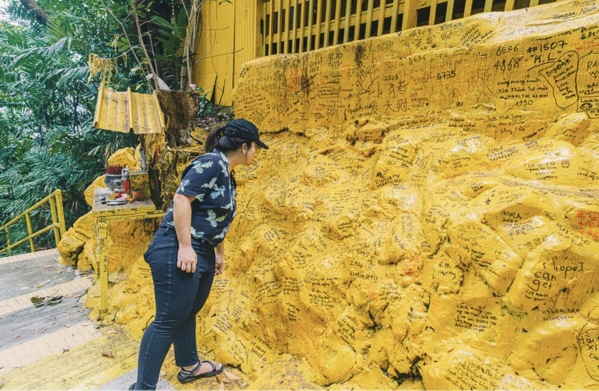

Keramat

Hidden in the further end of Kusu Island, the kusu keramats are located on the top of the hill. To visit, visitors will have to climb 152 step to get there.

In Kusu Keramats, there are 3 shrines built to commemorate a deeply religious Malay family (which consisted of Syed Abdul Rahman, his mother
Nenek Ghalib and his sister Puteri Fatimah) who lived in the 19th century.

At the keramat, blessings by caretakers are chanted in a mixture of Hokkien and Malay, while devotees burn joss paper and other offerings. There,
you will also find a bright yellow walls scribbled with well wishes. Many devotees visit the keramats to pray for wealth, good marriage, good health
and harmony. It is a popular shrine for childless couples who wish to start a family.
return to top
return to map